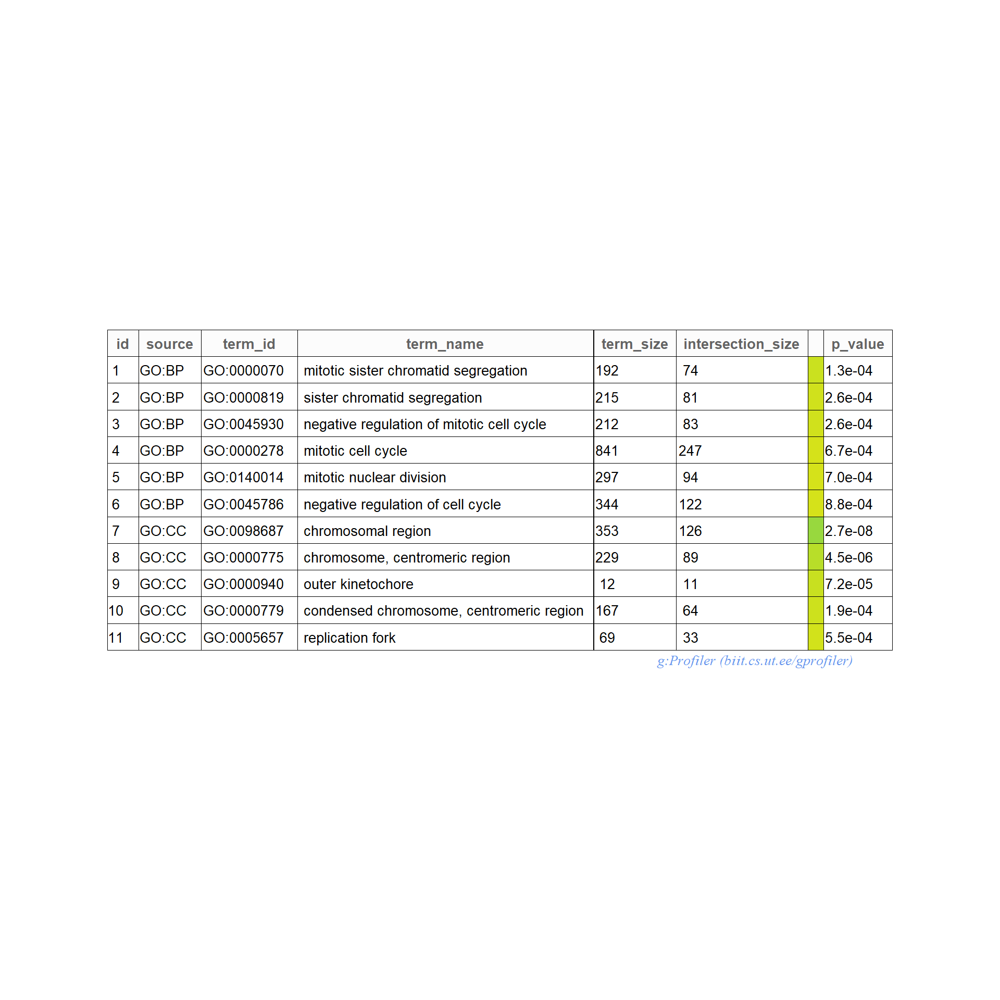

GO analysis
ERM
2023-01-31
Last updated: 2023-01-31
Checks: 7 0
Knit directory: Cardiotoxicity/
This reproducible R Markdown analysis was created with workflowr (version 1.7.0). The Checks tab describes the reproducibility checks that were applied when the results were created. The Past versions tab lists the development history.
Great! Since the R Markdown file has been committed to the Git repository, you know the exact version of the code that produced these results.
Great job! The global environment was empty. Objects defined in the global environment can affect the analysis in your R Markdown file in unknown ways. For reproduciblity it’s best to always run the code in an empty environment.
The command set.seed(20230109) was run prior to running
the code in the R Markdown file. Setting a seed ensures that any results
that rely on randomness, e.g. subsampling or permutations, are
reproducible.
Great job! Recording the operating system, R version, and package versions is critical for reproducibility.
Nice! There were no cached chunks for this analysis, so you can be confident that you successfully produced the results during this run.
Great job! Using relative paths to the files within your workflowr project makes it easier to run your code on other machines.
Great! You are using Git for version control. Tracking code development and connecting the code version to the results is critical for reproducibility.
The results in this page were generated with repository version 848eb1a. See the Past versions tab to see a history of the changes made to the R Markdown and HTML files.
Note that you need to be careful to ensure that all relevant files for
the analysis have been committed to Git prior to generating the results
(you can use wflow_publish or
wflow_git_commit). workflowr only checks the R Markdown
file, but you know if there are other scripts or data files that it
depends on. Below is the status of the Git repository when the results
were generated:
Ignored files:
Ignored: .RData
Ignored: .Rhistory
Ignored: .Rproj.user/
Ignored: analysis/figure/
Ignored: data/.txt
Ignored: data/allgenes.txt
Ignored: data/backGL.txt
Ignored: data/data_outline.txt
Ignored: data/filenameonly.txt
Ignored: data/mymatrix.RDS
Ignored: data/sigVDA24.txt
Ignored: data/sigVDA3.txt
Ignored: data/sigVDX24.txt
Ignored: data/sigVDX3.txt
Ignored: data/sigVEP24.txt
Ignored: data/sigVEP3.txt
Ignored: data/sigVMT24.txt
Ignored: data/sigVMT3.txt
Ignored: data/sigVTR24.txt
Ignored: data/sigVTR3.txt
Untracked files:
Untracked: reneebasecode.R
Note that any generated files, e.g. HTML, png, CSS, etc., are not included in this status report because it is ok for generated content to have uncommitted changes.
These are the previous versions of the repository in which changes were
made to the R Markdown (analysis/GO_analysis.Rmd) and HTML
(docs/GO_analysis.html) files. If you’ve configured a
remote Git repository (see ?wflow_git_remote), click on the
hyperlinks in the table below to view the files as they were in that
past version.
| File | Version | Author | Date | Message |
|---|---|---|---|---|
| Rmd | 848eb1a | reneeisnowhere | 2023-01-31 | updating GO plots |
| Rmd | 82b31a0 | reneeisnowhere | 2023-01-31 | updating GEA |
| Rmd | 34a525c | reneeisnowhere | 2023-01-26 | link update |
| html | 41b5f9c | reneeisnowhere | 2023-01-23 | Build site. |
| Rmd | dc890ec | reneeisnowhere | 2023-01-23 | Updating the source dir |
| Rmd | a78eab0 | reneeisnowhere | 2023-01-23 | updated Go analysis |
| Rmd | d9edc06 | reneeisnowhere | 2023-01-20 | try a little update later |
| Rmd | b7eac76 | reneeisnowhere | 2023-01-20 | updating GO |
| html | 6c21cf8 | reneeisnowhere | 2023-01-20 | Build site. |
| Rmd | 443a9f3 | reneeisnowhere | 2023-01-20 | adding in GO analysis |
GO Analysis
I have created several files from the RNA analysis that contain the significant genes(determined by adj.P.val < 0.1) from each Time and Condition. The names of the files are in the following format: ‘sigV’+Drug(2 letters)+time.
example: ‘sigVDA3.txt’ means this file contains the significant DE genes from the Daunorubicin 3 hour compared to Vehicle Control 3 hour analysis
library(gprofiler2)
library(tidyverse)
library(readr)
library(BiocGenerics)
library(gridExtra)
library(VennDiagram)The analysis is based on all genes that passed the rowMeans>0 from the previous page link
Below is the analysis of differentially expressed genes for each treatment at 3 hours and 24 hours.

I first looked at the data with all genes from the sigDA3 dataset. I used the list of all genes based on my rowMeans>0 filtering as background.
Analysis of Up versus Down
I then separated the VDA3 file by log2 Fold Change to see how the gene sets are enriched. Nothing showed up in the GO-BP/CC/MG-down regulated gene-set at a significant level, p<0.05.
I next wanted to see what happened at 24 hours with daunorubicin. I used the sigVDA24 file to do this.
unfortunately the enrichment below 0.0001

Graphing specific gene expression
First get a list of genes you want to see. There are multiple was to “see” these. I used the word ‘apple’ to store my list
sessionInfo()R version 4.2.2 (2022-10-31 ucrt)
Platform: x86_64-w64-mingw32/x64 (64-bit)
Running under: Windows 10 x64 (build 19044)
Matrix products: default
locale:
[1] LC_COLLATE=English_United States.utf8
[2] LC_CTYPE=English_United States.utf8
[3] LC_MONETARY=English_United States.utf8
[4] LC_NUMERIC=C
[5] LC_TIME=English_United States.utf8
attached base packages:
[1] grid stats graphics grDevices utils datasets methods
[8] base
other attached packages:
[1] VennDiagram_1.7.3 futile.logger_1.4.3 gridExtra_2.3
[4] BiocGenerics_0.42.0 forcats_1.0.0 stringr_1.5.0
[7] dplyr_1.1.0 purrr_1.0.1 readr_2.1.3
[10] tidyr_1.3.0 tibble_3.1.8 ggplot2_3.4.0
[13] tidyverse_1.3.2 gprofiler2_0.2.1 workflowr_1.7.0
loaded via a namespace (and not attached):
[1] bitops_1.0-7 fs_1.6.0 bit64_4.0.5
[4] lubridate_1.9.1 httr_1.4.4 rprojroot_2.0.3
[7] tools_4.2.2 backports_1.4.1 bslib_0.4.2
[10] utf8_1.2.2 R6_2.5.1 DBI_1.1.3
[13] lazyeval_0.2.2 colorspace_2.1-0 withr_2.5.0
[16] tidyselect_1.2.0 processx_3.8.0 bit_4.0.5
[19] compiler_4.2.2 git2r_0.31.0 textshaping_0.3.6
[22] cli_3.6.0 rvest_1.0.3 formatR_1.14
[25] xml2_1.3.3 plotly_4.10.1 labeling_0.4.2
[28] sass_0.4.5 scales_1.2.1 callr_3.7.3
[31] systemfonts_1.0.4 digest_0.6.31 rmarkdown_2.20
[34] pkgconfig_2.0.3 htmltools_0.5.4 highr_0.10
[37] dbplyr_2.3.0 fastmap_1.1.0 htmlwidgets_1.6.1
[40] rlang_1.0.6 readxl_1.4.1 rstudioapi_0.14
[43] shiny_1.7.4 jquerylib_0.1.4 generics_0.1.3
[46] jsonlite_1.8.4 crosstalk_1.2.0 vroom_1.6.1
[49] googlesheets4_1.0.1 RCurl_1.98-1.10 magrittr_2.0.3
[52] Rcpp_1.0.10 munsell_0.5.0 fansi_1.0.4
[55] lifecycle_1.0.3 stringi_1.7.12 whisker_0.4.1
[58] yaml_2.3.7 parallel_4.2.2 promises_1.2.0.1
[61] crayon_1.5.2 haven_2.5.1 hms_1.1.2
[64] knitr_1.42 ps_1.7.2 pillar_1.8.1
[67] futile.options_1.0.1 reprex_2.0.2 glue_1.6.2
[70] evaluate_0.20 getPass_0.2-2 lambda.r_1.2.4
[73] data.table_1.14.6 modelr_0.1.10 vctrs_0.5.2
[76] tzdb_0.3.0 httpuv_1.6.8 cellranger_1.1.0
[79] gtable_0.3.1 assertthat_0.2.1 cachem_1.0.6
[82] xfun_0.36 mime_0.12 xtable_1.8-4
[85] broom_1.0.3 later_1.3.0 ragg_1.2.5
[88] googledrive_2.0.0 viridisLite_0.4.1 gargle_1.2.1
[91] timechange_0.2.0 ellipsis_0.3.2